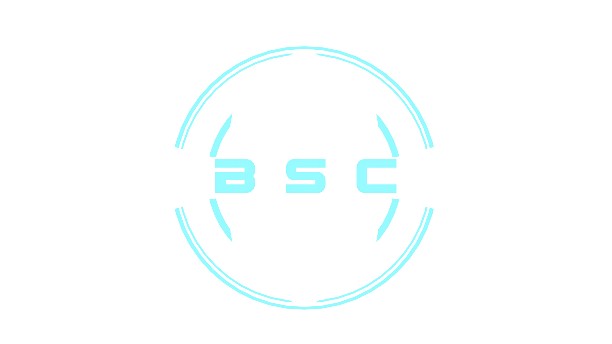

Bantu Stream Connect
Home
Creators
Users
Empowerment
Blog
Join the Community
Beyond the Screen: Bantu Stream Insights
Explore Topics
Tech & Innovation
Loading...
Sustainability
Loading...
Creative Industries
Loading...
Entrepreneurship
Loading...
Latest Insights
Load More Articles
Stay Updated with African Innovation
Get weekly insights, creator spotlights, and platform updates delivered directly to your inbox.
Subscribe